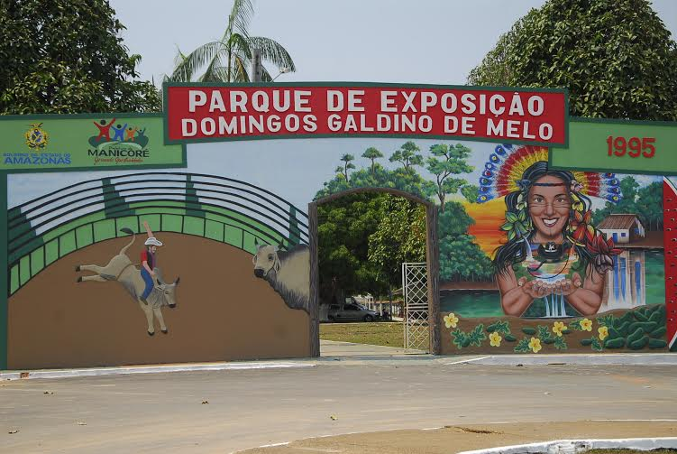

Visitar o Parque de Exposições - EXPOMANI
Um dos principais pontos turísticos da cidade de Manicoré onde todos os anos é comemorada a festa da melancia trazendo grandes artistas do cenário nacional.
Também é palco de rodeios e ainda possui uma lagoa com várias espécies de peixes e tartarugas. O que será que o Twitter tem de informação sobre o evento?